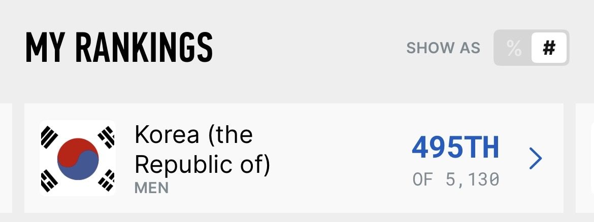
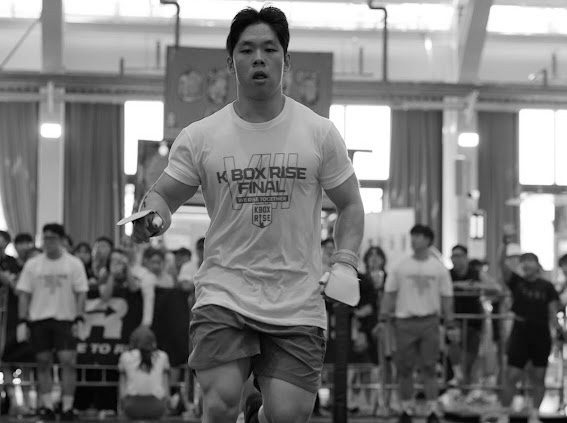
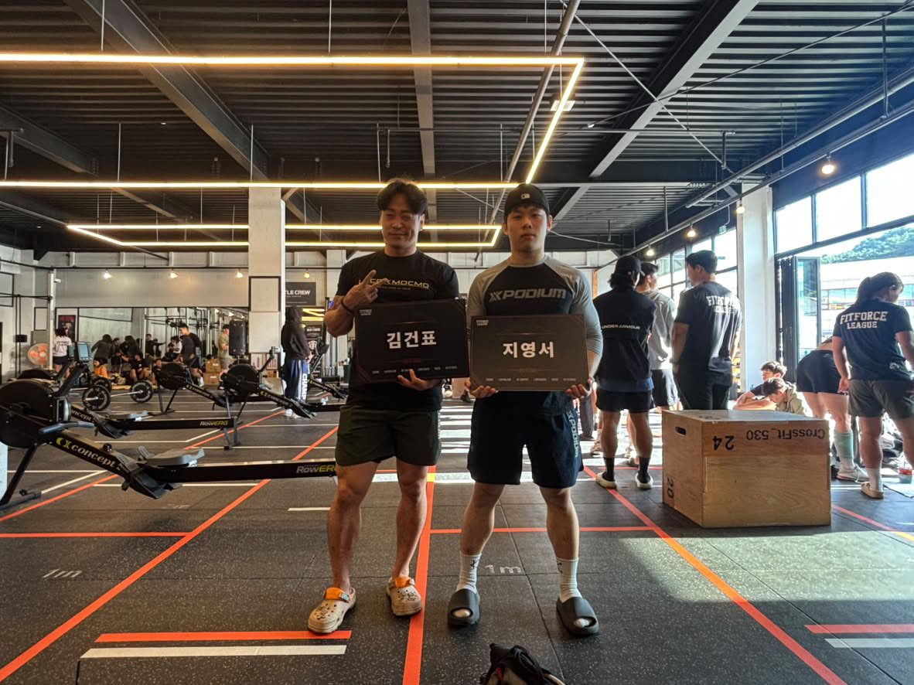
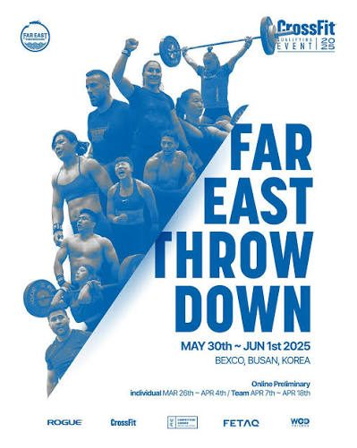
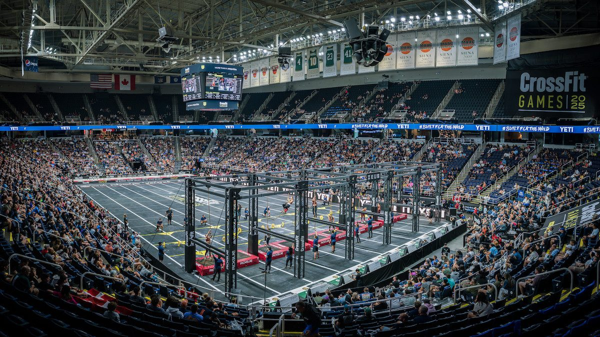
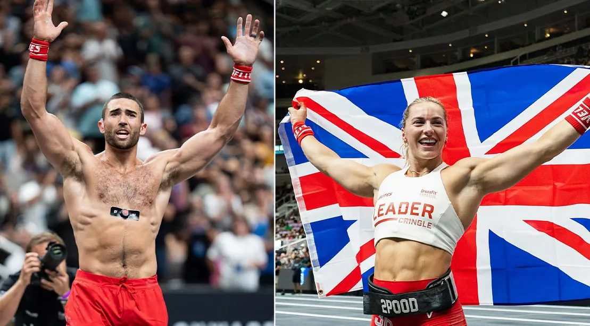

495THIndividual · Korea
of 5,130 · 세계 12,144th of 127,0782026 CrossFit Open전 세계 동시 진행 온라인 예선국내·세계 모두 상위 9.6%지영서
Ji Young Seo
수상이나 자격증은 아직 없지만, 숫자로 남은 기록이 지금의 제 위치를 가장 정확하게 보여 줍니다.



크로스핏은 무게, 체조, 지구력을 한 번에 겨루는 종목이라 체중과 신장의 차이가 기록에 그대로 드러납니다. 체격의 불리함을 어떤 훈련과 영양 전략으로 메울 수 있는지, 선수인 제 몸으로 직접 확인해 보고 싶습니다.
GYMBOXX 종암점
코치 자리에서 잠시 내려와 박스 운영을 안쪽에서 보고 있습니다. 수업 준비, 회원 관리처럼 수업 밖에서 박스를 움직이는 일을 배우는 중입니다.
Training Shaka 경기 안성점
오전반 그룹 수업을 맡아 워밍업, 동작 지도, 와드 진행까지 한 시간 수업 전체를 이끌었습니다.
초보 회원분이 계속 안 되던 동작을 제 코칭으로 처음 성공했을 때가 가장 보람찼습니다.
회원마다 막히는 지점이 달랐습니다. 한 가지 설명을 반복하기보다 그 사람에게 맞는 말과 시범을 찾아야 동작이 바뀐다는 것을 배웠습니다.
어려운 동작은 단계로 나누고 강도를 조절(스케일링)하면 초보자도 해낼 수 있습니다. 작은 성공을 쌓게 하는 순서가 코칭의 핵심이었습니다.
내가 할 줄 아는 것과 남에게 가르칠 수 있는 것은 다릅니다. 동작을 말로 설명하면서 제 자세의 빈틈도 더 정확히 보이기 시작했습니다.
초보 회원의 첫 성공은 제 기록이 오를 때와는 다른 종류의 기쁨이었고, 코치라는 진로를 계속 붙잡게 한 이유가 되었습니다.
See myselfclearly.
기록과 영상을 감정 없이 보고, 잘하는 것과 못하는 것을 그대로 인정합니다. 이 능력은 선수로서 저를 키우는 방법이자, 코치로서 다른 사람을 보는 눈이 됩니다.
순위표에서 어느 종목에서 밀렸는지 확인하고, 그 약점을 다음 시즌 훈련의 첫 번째 우선순위로 둡니다.
제 동작을 냉정하게 보던 눈은 회원의 동작을 정확히 진단하는 눈이 됩니다. 약점을 직접 고쳐 온 과정은 그대로 훈련 프로그램이 됩니다.
세미파이널에서 시작해 게임즈까지. 한 단계씩 올라가는 순서로 목표를 세웠습니다.

아시아 지역 세미파이널인 파이스트 스로다운 무대에 서는 것이 1년 안의 목표입니다. 국내 상위 9.6%에서 진출선까지 순위를 끌어올리겠습니다.
한 번의 진출로 끝나지 않고, 세미파이널에서 경쟁할 수 있는 근력, 체조, 지구력을 고르게 갖추겠습니다.
세계에서 가장 강한 선수들만 서는 무대, 크로스핏 게임즈에 아시아 선수로 서는 것이 제 최종 목표입니다.
스포츠 영양을 공부하고, 시합 주간과 훈련 주간 식단에 직접 적용해 기록으로 남기겠습니다.
해외와 아시아권 크로스핏 대회에 나가, 세미파이널과 게임즈 수준의 경기를 직접 경험하겠습니다.
다시 그룹 수업을 맡아, 영상과 기록 데이터로 회원의 동작과 훈련량을 관리해 보겠습니다.

Road tothe Games.
오픈에서 세미파이널, 그리고 게임즈까지. 체격의 한계를 훈련과 데이터로 넘어서, 저 경기장 한가운데에 서겠습니다.

Let'sTrain.